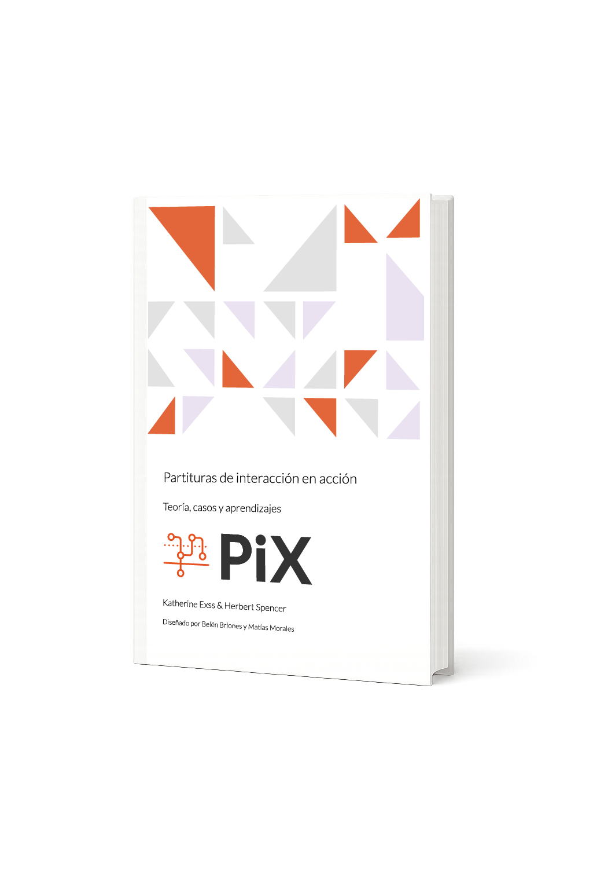

Prólogo
Introducción
Teoría
Acerca del Libro
Casos de uso
Codiseño de experiencias formativas en escuelas públicas
Visualización colaborativa de interacciones en un marketplace solidario
Diseño de flujos digitales accesibles para una política de cuidado
Representación integrada de flujos de servicio en procesos públicos complejos
Interacciones con realidad aumentada para la estimulación cognitiva
Planificación y alineación técnica para el diseño de un MVP en fintech
Análisis sistémico de plataformas de delivery y su impacto urbano
Bibliografía
